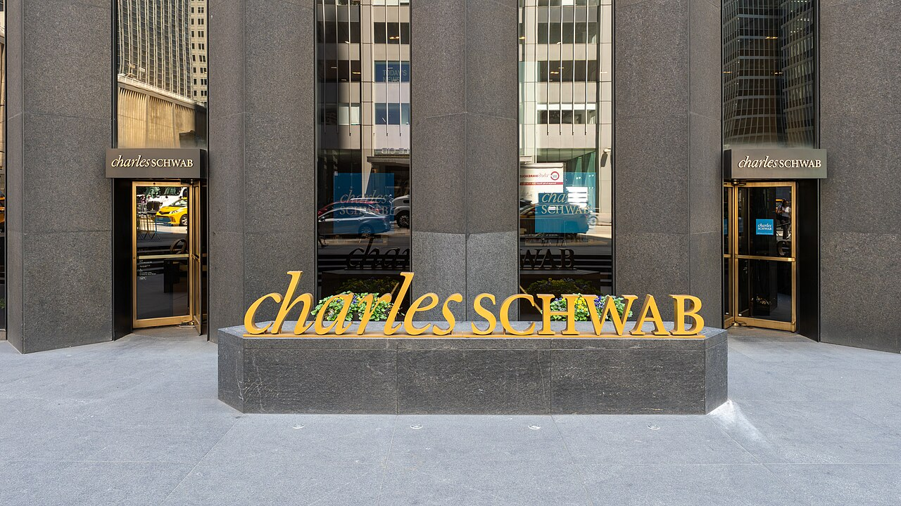

Executive Summary
10월 15일 찰스 슈왑 3분기 실적 발표에서 최고경영자 릭 워스터가 외부 AI 비서의 계좌 로그인을 허용하지 않겠다고 말했다. 고객에게서 아이디와 비밀번호를 받아 브라우저를 대신 조작해 들어오는 방식을 두고 한 말이다. 같은 주에 JP모건·뱅크오브아메리카·씨티도 비슷한 방침을 내놨고, 웰스파고는 차단 대신 약관을 고쳤다. 이 글은 나흘 사이에 벌어진 그 결정들이 각각 무엇을 막고 무엇을 열어 두었는지 본다.
은행들이 앞세운 이유는 책임 소재다. 사고가 나면 누가 물어내느냐는 것이다. 다만 같은 보도에 다른 숫자가 함께 실렸다. JP모건·뱅크오브아메리카·웰스파고가 들고 있는 무이자 예금이 1조 6천억 달러인데, 이 돈이 AI 비서의 손에 이끌려 이자를 주는 상품으로 옮겨 가면 세 은행이 매년 더 내야 할 돈이 470억 달러로 추산된다. 슈왑은 완전히 문을 잠그지도 않았다. 잔고 조회와 리서치는 열고 송금은 막는 연결 통로를 따로 준비하고 있다.
4절까지는 실적 발표와 보도에 적힌 사실을 따라간다. 그 결정을 데이터 접근권의 문제로 옮겨 읽는 5절은 이 글의 해석이다.
주요 수치
출처: 슈왑 3분기 실적 발표와 아메리칸 뱅커, 온인베스트 보도.
열 몇~스무 몇 건
슈왑이 한 주에 막는 외부 AI 비서 로그인
워스터가 주간 보고로 받아 보는 수다. 큰 에이전트만 센 것이다
4,928억 달러
9월 말 슈왑 고객의 대기성 예수금
3분기 순이자수익 35억 달러가 주로 여기서 나왔다
1조 6천억 달러
세 은행이 이자를 주지 않고 받아 둔 예금
JP모건·뱅크오브아메리카·웰스파고 합산으로, 세 곳 부채의 16%다
470억 달러
그 예금에 연 3% 이자가 붙을 때 세 은행의 연간 부담
아폴로 수석이코노미스트 토르스텐 슬록의 추산이다
슈왑이 막는 것은 로그인 방식이다
찰스 슈왑은 미국의 대형 증권사다. 개인이 주식을 사고팔고 은퇴자금을 굴리는 계좌를 수천만 개 들고 있고, 9월 말 기준 고객이 당장 투자하지 않고 계좌에 묶어 둔 대기성 예수금만 4,928억 달러다. 10월 15일 3분기 실적 발표에서 최고경영자 릭 워스터가 그 계좌에 관한 방침을 하나 말했다.

워스터의 문장은 조건이 분명하다. 고객에게 AI를 안전하게 전해 주고 싶지만 안전하지 않다고 보는 방식이 하나 있고, 에이전트가 사이트에 찾아와 고객을 대신해 로그인하려는 것이 그 방식이다. 그건 허용하지 않겠다고 했다. 막는 대상이 AI 자체가 아니라 들어오는 방식이라는 점이 여기서 갈린다. 고객이 자기 아이디와 비밀번호를 외부 프로그램에 넘기고, 그 프로그램이 사람인 척 화면을 조작해 들어오는 경로가 차단 대상이다.
다음 날 블룸버그 텔레비전 인터뷰에서 워스터가 규모를 덧붙였다. 차단 건수를 주간 보고로 받아 보는데, 큰 에이전트 기준으로 한 주에 열 몇 건에서 스무 몇 건 수준이라고 했다. 수백 건도 수천 건도 아니다. 워스터는 이 수를 이렇게 읽었다. 사람들이 AI를 좋아하기는 하지만 아직 자기 금융 계좌를 통째로 넘길 생각은 없다는 뜻이다.
차단하는 쪽의 논리는 워스터가 든 예 하나에 다 들어 있다. 메타의 개인용 AI 비서 뮤즈다. 고객이 뮤즈에게 비밀번호를 건네고 대신 움직이게 하는 상황을 두고, 우리도 통제할 수 없고 고객도 통제할 수 없는데 뭔가 잘못되면 누가 책임지느냐고 물었다. 고객을 보호하기 위해서도, 슈왑 자신을 보호하기 위해서도 허용하지 않는다는 말이 뒤에 붙었다.
여기서 막히는 것은 권한이 아니라 신원이다. 고객의 자격증명을 빌려 들어온 프로그램은 기록에 고객 본인으로 남는다. 사고가 난 뒤 그 접속이 사람이었는지 프로그램이었는지 기록만으로는 알 수 없고, 알 수 없으면 책임을 나눌 방법도 없다.
나흘 사이에 다섯 은행이 선을 그었다
슈왑만의 결정이 아니었다. 미국 대형 금융사의 3분기 실적 발표가 몰린 10월 13일부터 16일까지 나흘 동안, 다섯 곳이 외부 AI 에이전트를 어떻게 대할지 차례로 밝혔다. 같은 질문에 답했지만 답의 모양은 서로 달랐다.
| 시점 | 누가, 어디서 | 무엇을 정했나 |
|---|---|---|
| 10월 13일 | JP모건 제이미 다이먼, 실적 발표 | 외부 에이전트를 자사 시스템 안에 들이지 않겠다고 했다. "통제를 벗어난 에이전트는 원치 않는다. 그런 게 수천 개가 될 수도 있다." 현재 제3자 도구에는 계좌 조회만 열어 두고 송금과 청구서 납부는 막아 두고 있다 |
| 10월 14일 | 뱅크오브아메리카 브라이언 모이니핸, 실적 발표 | "계좌에서 돈이 나가는 것을 승인하는 자리에는 반드시 사람이 있어야 한다고 우리는 굳게 믿는다." 전면 차단보다는 사람의 승인을 조건으로 거는 쪽이다 |
| 10월 15일 | 찰스 슈왑 릭 워스터, 실적 발표 | 고객을 대신한 에이전트의 로그인을 허용하지 않는다. 다음 날 블룸버그 인터뷰에서 주당 차단 건수와 별도 연결 통로 계획을 밝혔다 |
| 10월 16일 | 씨티그룹, 파이낸셜타임스에 밝힌 입장 | 에이전트가 "고객 계좌에 로그인하거나 직접 거래하는 것"을 허용하지 않는다 |
| 11월 24일 시행 | 웰스파고, 온라인 이용약관 개정 | 차단하겠다고 하지 않았다. 대신 제3자 AI 도구로 들어온 요청을 "고객 본인이 직접 보낸 것처럼" 처리할 수 있다고 약관에 적고, 그 도구를 관리할 책임을 고객에게 지웠다. 필요하면 특정 도구의 접근을 제한하거나 막을 권리도 함께 적었다 |
출처: 각 사 실적 발표와 이를 전한 보도 종합. 웰스파고 항목은 은행이 공지한 온라인 이용약관 개정 내용이며, 날짜는 시행일이다.
표를 세로로 읽으면 온도차가 보인다. 씨티는 로그인과 거래를 모두 막는 쪽이다. JP모건은 자사 시스템에 외부 에이전트를 들이지 않겠다고 하면서도 조회는 이미 열어 둔 상태다. 뱅크오브아메리카는 차단보다 사람의 승인이라는 조건을 건다. 웰스파고는 아예 문을 잠그는 대신 약관 문장을 바꿨다. 보글헤즈 포럼의 한 이용자가 두 판본을 비교해 본 바로는, 11월 24일 시행되는 새 약관에 'AI'라는 말이 44번 나온다. 5월 21일 판에는 한 번 나왔다.
이 결정들이 한 주에 몰린 데에는 앞선 사건이 있다. 메타가 9월 8일에 내놓은 개인용 AI 비서 뮤즈다. 대화로 시키면 메일을 정리하고 예약을 잡고 물건을 주문하는 이 에이전트는 출시 한 주 만에 미국 앱스토어 무료 앱 1위에 올랐고, 9월 20일 밤에는 아마존이 이용약관 위반을 이유로 뮤즈의 구매를 막았다. 페블러스는 그 차단을 계약의 문제로 읽은 글에서 한 번 다뤘다. 이번 건은 같은 트리거에서 갈라져 나온 두 번째 전선이고, 걸려 있는 것이 주문 단추가 아니라 돈이 들어 있는 계좌라는 점에서 무게가 다르다.
내세운 이유와 걸려 있는 돈
다섯 곳이 공개적으로 든 이유는 대체로 같다. 보안과 책임 소재다. 외부 프로그램이 고객 자격증명으로 들어와 돈을 옮겼는데 그 지시가 고객의 본뜻과 달랐다면 손해를 누가 물어내는가. 현행 미국 법은 이 질문에 명확한 답을 주지 않는다. 보도에 따르면 연방준비제도 쪽 인사들은 비공개로는 은행들의 조치에 공감하면서도, 누가 거래를 승인했고 책임은 어디에 있는지를 법으로 정리할 필요가 있다고 본다. 아직 그 입법은 없다.
같은 보도에 다른 숫자가 함께 실린다. 은행이 외부 에이전트를 들였을 때 잃을 수 있는 것은 소송 비용만이 아니다. JP모건·뱅크오브아메리카·웰스파고 세 곳이 들고 있는 무이자 예금이 1조 6천억 달러로, 세 곳 부채를 합한 금액의 16%에 해당한다. 고객이 이자를 거의 받지 못한 채 당좌계좌에 넣어 둔 돈이고, 은행 입장에서는 가장 싸게 조달한 자금이다.
그 돈이 지금 받는 이자는 사실상 없다. 미국 당좌계좌의 평균 금리가 연 0.1%다. 이자를 주는 계좌로 옮기면 연 3.3%에서 5.0%를 받는다. 보도가 나란히 적은 두 숫자가 이것이다. 그 간격이 새로 생긴 것도 아니고 고객이 몰랐던 것도 아니다. 옮기려면 사람이 계좌를 하나 더 열고 이체를 걸어야 했을 뿐이다.
AI 비서가 이 돈에 무엇을 할 수 있는지는 짐작하기 어렵지 않다. 계좌 잔고를 읽고 더 나은 금리를 찾아 옮기는 일은 에이전트가 잘하는 종류의 일이고, 사람이 귀찮아서 미뤄 두던 종류의 일이기도 하다. 아폴로의 수석이코노미스트 토르스텐 슬록은 그 1조 6천억 달러에 연 3%의 이자가 붙는다고 가정하고 세 은행이 매년 추가로 부담할 금액을 470억 달러로 계산했다.
이 470억 달러를 그대로 읽으면 안 되는 이유가 두 가지 있다. 하나는 상한이라는 점이다. 무이자 예금이 전부 옮겨 간다는 가정 위에 세운 수이지, 실제로 얼마가 움직일지 예측한 수가 아니다. 다른 하나는 범위다. 이 합산에 슈왑은 들어 있지 않다. 슈왑 쪽에서 같은 자리에 놓이는 금액은 고객 대기성 예수금 4,928억 달러이고, 3분기 순이자수익 35억 달러가 주로 거기서 나왔다. 금리 가정은 반대쪽으로 기울어 있다. 슬록이 쓴 연 3%는 앞에 적은 3.3%에서 5.0% 사이보다 낮다. 이동 규모는 전부를 가정하고 금리는 낮춰 잡은 수라는 뜻이다.
두 이유를 빼고도 남는 사실은 있다. 외부 에이전트를 막는 결정을 내리는 쪽과 그 결정으로 조달 비용을 지키는 쪽이 같은 회사다. 보안 논리가 거짓이라는 뜻은 아니다. 책임 소재 문제는 실재하고, 비밀번호를 외부 프로그램에 넘기는 방식이 위태롭다는 판단에도 근거가 있다. 다만 이 사안에서는 안전한 선택과 수익에 유리한 선택이 같은 방향을 가리키고, 그래서 어느 쪽이 결정을 끌었는지 바깥에서 가려낼 수단이 없다.
워스터 본인은 이 해석을 먼저 꺼내 부인했다. 시장의 걱정 하나를 자기도 안다고 말했다. AI가 퍼지면 고객이 계좌에 두는 현금이 줄어들리라는 걱정이다. 그러고는 슈왑에서는 반대 현상이 보인다고 했다. AI를 쓰는 고객일수록 주식을 더 활발히 사고팔기 때문에 현금을 오히려 더 들고 있다는 것이다. 이 말이 맞는지는 슈왑 바깥에서 확인할 자료가 없다. 다만 차단을 말한 자리에서 당사자가 예금 이탈이라는 동기를 집어 미리 부인했다는 점은 기록해 둘 만하다.
대신 슈왑이 연 문은 어디까지 열리나
슈왑의 대응이 다섯 곳 가운데 눈여겨볼 만한 것은 막기만 하지 않았다는 데 있다. 워스터는 외부 로그인을 막는 자리에서 두 가지 대안을 함께 말했다. 하나는 슈왑이 직접 만든 AI 비서 찰리(Charley)이고, 다른 하나는 외부 AI 모델이 슈왑 데이터에 닿을 수 있게 하는 별도 연결 통로다.
찰리는 9월 30일에 공개됐다. 외부 대규모 언어모델 위에 슈왑이 가진 데이터를 얹어 만든 비서인데, 지금 할 수 있는 일의 범위가 좁다. 주소 변경이나 비상 연락처 지정 같은 행정 처리, 그리고 정보를 찾아 정리해 주는 일이 전부다. 거래는 하지 않는다. 워스터는 장차 대화만으로 슈왑 웹사이트의 기능 전반에 닿을 수 있게 넓히겠다고 했고, 시간이 지나면 찰리가 슈왑에서 AI와 연결되는 주된 통로가 될 것으로 본다고 말했다. 실제 적용은 10월부터 자격이 되는 미국 개인 고객부터 단계적으로 진행된다. 막는 쪽은 이미 돌아가고 있고, 대신 쓰라는 쪽은 아직 열리는 중이다.
두 번째가 더 중요하다. 슈왑은 MCP 서버를 준비하고 있다. MCP는 AI 모델이 바깥의 데이터와 도구에 연결될 때 쓰는 공통 규격이다. 사람 흉내를 내며 화면을 조작하는 대신, 모델이 정해진 창구에 정해진 형식으로 요청을 보내고 답을 받는 방식이라고 보면 된다. 슈왑이 이 창구로 열겠다고 한 것은 잔고 조회와 리서치다. 돈을 옮기는 일은 열지 않는다.
두 경로의 차이는 기술보다 설계 권한에 있다. 비밀번호를 넘겨받은 에이전트는 고객이 할 수 있는 일을 전부 할 수 있다. 고객의 권한을 그대로 물려받기 때문이다. MCP 창구는 그렇지 않다. 무엇을 요청할 수 있고 무엇은 요청할 수 없는지를 창구를 연 쪽이 미리 정해 둔다. 슈왑이 조회는 열고 송금은 닫았다는 말은, 이제 그 경계선이 고객의 결심이 아니라 슈왑의 설정 파일에 적힌다는 뜻이다.
그 경계가 읽기와 쓰기 사이에 그어져 있는 것도 아니다. 아메리칸 뱅커에 따르면 슈왑은 일부 대규모 언어모델이 슈왑에 연결해 거래를 체결하도록 이미 허용하고 있다. 챗GPT도 거기에 들어간다. 워스터는 앞으로 더 많은 고객과 더 많은 모델에 거래 권한을 주겠다고 했고, 돈을 옮기는 일만은 거기서도 빼 두겠다고 했다. 고객에게도 회사에도 위험이 너무 크다는 이유다. 주식을 사고파는 쓰기는 열려 있고 계좌 밖으로 돈이 나가는 쓰기만 닫혀 있다.
슈왑이 3분기 실적 발표 자료에 올린 AI 항목은 둘이다. 하나가 찰리이고, 다른 하나는 앤트로픽과 손잡고 금융 자문용 클로드를 슈왑이 상대하는 독립 투자자문사들에게 공급하는 일이다. 바깥 에이전트의 로그인을 허용하지 않겠다고 말한 바로 그 자리에서, 슈왑은 자기가 고른 모델을 고객과 자문사 앞에 들여놓고 있었다. 막힌 것은 AI가 아니라 슈왑이 고르지 않은 AI다.
차단과 개방이 반대말처럼 보이지만 이 사안에서는 한 벌이다. 비밀번호를 건네는 길을 막으면 에이전트가 계좌에 닿을 길은 은행이 직접 낸 길 하나만 남는다. 그 길의 폭을 정하는 권한도 같은 쪽으로 넘어간다.
페블러스가 이 결정을 주목하는 이유
우리가 이 사건에서 가져가는 것은 금융 규제 전망이 아니다. 내 데이터를 내가 고른 대리인에게 넘길 권리가 플랫폼이 관리하는 창구와 부딪칠 때 어느 쪽이 이기는지를, 이번 나흘이 꽤 선명하게 보여 줬다.
계좌 잔고는 내 데이터다. 그 데이터를 내 AI 비서에게 읽히겠다는 결정도 원칙적으로는 내가 한다. 그런데 실제로 그 일이 가능한지는 슈왑이 정한다. MCP 창구로는 조회까지만 된다는 경계선, 찰리를 통하면 되고 뮤즈를 통하면 안 된다는 구분, 열어 줄 통로의 규격까지 전부 슈왑이 설계한다. 고객이 "내 데이터니까 내가 넘기겠다"고 말해도, 넘기는 통로가 없으면 그 말은 성립하지 않는다.
한 달 전 아마존이 같은 구조를 먼저 보여 줬다. 그때 아마존이 꺼낸 근거는 컴퓨터 침입을 다루는 법이 아니라 고객이 이미 동의한 이용약관이었다. 이번에도 가장 멀리 간 쪽은 차단을 선언한 은행이 아니라 약관을 고친 웰스파고다. 제3자 AI 도구로 들어온 요청을 고객 본인의 요청처럼 처리하고 그 도구의 관리 책임은 고객이 진다는 문장은, 문을 잠그는 대신 문을 통과한 모든 것의 결과를 고객에게 돌려놓는다. 접근권의 경계가 기술이 아니라 계약서에서 그어진다는 뜻이다.
데이터를 다루는 쪽에서 이 흐름을 보면 다음 문제가 보인다. 다섯 곳의 답이 다섯 가지였다. 어떤 곳은 조회만 열고, 어떤 곳은 사람의 승인을 조건으로 걸고, 어떤 곳은 약관으로 책임을 옮긴다. 고객의 에이전트는 상대가 누구냐에 따라 매번 다른 규칙을 만난다. 금융에서만 벌어질 일도 아니다. 의료 기록, 통신 이용 내역, 사내 업무 시스템에서도 같은 질문이 같은 순서로 올라온다. 누가 들어오는가, 무엇까지 할 수 있는가, 잘못되면 누가 책임지는가.
조직 안에서 먼저 확인할 것은 세 가지다.
- • 우리 데이터에 외부 에이전트가 닿는 길이 몇 개인가 — 공식 연동만 세면 모자란다. 고객이나 직원이 자격증명을 넘겨 쓰는 경로는 대개 집계에 잡히지 않는다. 슈왑이 그 수를 주간 보고로 세고 있다는 점이 이번 사건에서 가장 실무적인 대목이다
- • 사람과 에이전트를 기록에서 구별할 수 있나 — 접속 로그에 그 구분을 적는 칸이 있는지부터 보면 된다. 칸이 없으면 나중에 따질 재료도 없고, 세지 못하는 접속은 정책으로도 다룰 수 없다
- • 읽기와 쓰기의 경계를 누가 어디에 적어 두었나 — 슈왑은 그 경계를 MCP 창구의 규격으로 적었고, 그 선은 읽기와 쓰기 사이에 있지 않다. 주식 주문은 열어 두고 계좌 밖으로 나가는 돈만 막았다. 정책 문서에만 있고 시스템에 없는 경계는 에이전트 앞에서 작동하지 않는다
덧붙일 것이 있다. 이번 결정을 두고 은행이 고객의 권리를 빼앗았다고 말하기는 어렵다. 비밀번호를 외부 프로그램에 넘기는 방식은 실제로 위태롭고, 그 길을 닫은 판단에는 근거가 있다. 다만 그 길을 닫으면서 새 길의 폭을 정하는 권한까지 같은 쪽이 가져갔다는 사실은 남는다. 에이전트 시대에 데이터 접근권을 설계하는 자리는 지금 비어 있지 않다. 데이터를 보관한 쪽이 이미 앉아 있고, 그 자리에는 그쪽의 이해관계가 함께 앉아 있다.
Editor's Note
데이터 품질 진단을 나가 보면 "이 데이터를 외부에 어디까지 내보낼 수 있느냐"는 질문의 답이 대개 사람 머릿속이나 담당자 메일에 있다. 사람이 사람에게 넘기던 시절에는 그걸로 굴러갔다. 에이전트가 요청하기 시작하면 그 답이 시스템이 읽을 수 있는 형태로 어딘가에 적혀 있어야 한다. 슈왑이 MCP 창구에 적어 둔 것이 정확히 그 답이다.
여기까지 읽어 주셔서 감사하다. 이 글의 사실관계는 슈왑 3분기 실적 발표와 아메리칸 뱅커를 비롯한 보도에서 확인했고, 각 은행이 공개하지 않은 내부 기준은 다루지 않았다. 사내에서 외부 에이전트에게 데이터 접근을 허용하면서 그 경계를 어떻게 적어 두었는지 사례가 있으시다면 나눠 주시면 좋겠다.
(주)페블러스 데이터 커뮤니케이션팀
2026년 10월 18일
참고문헌
슈왑 발표와 보도
- 1.American Banker. (2026). "Schwab blocks unauthorized AI agents, points clients to Charley." (1절·4절 1차 출처 — 워스터 발언, 찰리 공개 시점과 기능 범위)
- 2.The Next Web. (2026). "Schwab and JPMorgan are blocking AI agents from moving customer money." (1절·4절 — 주당 차단 건수, MCP 서버가 열고 닫는 범위, 메타 뮤즈 지목)
- 3.The Charles Schwab Corporation. (2026). "Schwab delivers record net new assets & earnings (2026년 3분기 실적 발표)." (1절·3절·4절 — 대기성 예수금 4,928억 달러, 순이자수익, 찰리와 앤트로픽 협업을 함께 올린 AI 항목)
- 4.The Charles Schwab Corporation. (2026). "Meet Charley, Schwab's New AI-Powered Assistant Designed to Help Clients Get Answers and Take Action." (4절 — 찰리 공개일 2026년 9월 30일, 10월부터 자격이 되는 미국 개인 고객 대상 단계적 적용)
은행권 대응과 예금 이탈 추산
- 5.Oninvest. (2026). "Citigroup and BofA are the latest U.S. banks to restrict AI agents from accessing client accounts." (2절·3절 1차 출처 — 씨티·BofA 입장, 무이자 예금 1조 6천억 달러와 470억 달러 추산, 연준 기류)
- 6.TheStreet. (2026). "JPMorgan stock: Dimon warns on AI bank access." (2절 — 다이먼 발언과 JP모건의 현행 허용 범위)
- 7.Cellcog. (2026). "US banks vs AI agents: who blocks what, bank by bank." (2절 — 다섯 은행 발표 일자 대조. 업계 정리 글이며 1차 출처 아님)
약관과 선행 사건
- 8.Wells Fargo. (2026). "We are updating our Online Access Agreement." (2절·5절 — 11월 24일 시행 약관 개정 내용, 제3자 AI 도구 조항)
- 9.Bogleheads 포럼. (2026). "Wells Fargo Bank updates its Online Access Agreement for AI." (2절 — 신·구 약관의 'AI' 언급 횟수 비교. 이용자 집계이며 은행 공식 집계 아님)
- 10.페블러스 블로그. (2026). "내 대신 장 보는 AI, 가게가 막아도 될까?." (2절·5절 — 같은 트리거에서 한 달 앞서 벌어진 아마존의 뮤즈 차단)